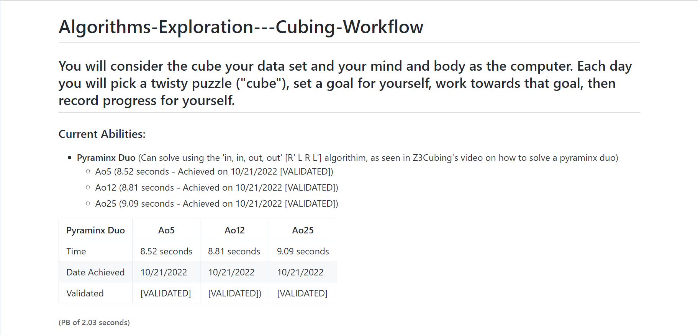

About Me (My Coding Journey)
My programming experince started all the way back in Grade 6, when I started using Scratch to make experinces with block-based coding. Eventually in middle school, I made use of HTML and JS to make a web game about guessing numbers, where then I was invited to A.Y. Jackson SS to be taught C++ by the senior Computer Science class. Then, when I reached High School, I took Computer Science to learn JavaScript and C++, where now I reside in my senoir year making a portfolio of the modules I have worked through throughout the semester.
Learn Git and GitHub
This module taught me the basics of pushing versions of code to Git and GitHub, in order to store renditions of my code that I work on throughout the school year, which will help me to keep track and organize this code. This is significant as it allows me to properly assemble all the programs that I output into repositories that can be run on GitHub Pages. I liked how it taught me both Git and GitHub, which can prepare me for different environments, such as version control based out of only my computer. This module also taught me the importance of version control when programming. This had a profound impact on me countless times as I’ve lost work and had no choice but to start over as I hadn’t saved previous iterations, where now I can more easily save and restore projects.
Create a Front End React App
Moving through this module allowed me to relearn the foundation of JavaScript with concepts such as arrays and loops while also touching on some unfamiliar ones, including objects and classes. This will allow me to continue learning JavaScript by providing the foundation needed to learn different programming concepts by building on top of existing ideas. This module is important as it cements the core ideas of JavaScript needed for further learning, unlike other modules which may assume you already know coding concepts. This segment, as stated before, made an impression on me as it touched bases with Grade 9 Computer Science and allowed me to reintegrate back into JavaScript.
Create a Back End React App
Although this module also went over some of the JavaScript basics mentioned in the Front-End module, it also covered the working components of applications, such as the server needed to perform back-end operations and retrieving data via the back-end. This will help me to integrate programs I make into databases and online services further increasing the complexity and utility of these applications. Which then can teach me about data structures that can hold, send and retrieve data from the backend. This is different from the other modules as it is tailored to run what the user cannot see and instead what the application needs, so it can work to make the experience of the application more streamlined without interrupting user use. This specifically has allowed us to have the ability to gather feedback from projects to know what we can improve on, as shown in our Hackathon project this year.
Making Webpages Interactive
Made using: Khan Academy Computer Science
With Document Object Models, HTML in websites can be replaced using JavaScript in order to add more interactivity, like user events, animation, and changing the style of elements in the website. This stands out as the most integrated module as JavaScript is used in conjunction with HTML to make a website, instead of just HTML, with JavaScript being a seperate element (like a canvas). Thus furthering our learning with programming as now we know how we can integrate JavaScript with HTML so it can better segue us into web development. This personally has made the jump between JavaScript and HTML less jarring and as I learn more about DOM nodes, I can better understand the connections between JS and HTML as well as the possibilities of what can be done when making webpages.
Making Webpages More Interactive with JQuery
Made using: Khan Academy Computer Science
JQuery adds onto the ‘Making Webpages Interactive’ Module by instead of using DOM nodes, it uses JQuery collections. This is significant because it makes for easier changes to the HTML, allowing for quicker updates as well as being able to implement more logic found in JavaScript than in Document Object Model nodes in fewer lines of code. Meaning that I can continue to learn about programming and JavaScript while making a webpage as I can use JavaScript logic easily. This also helped me to better understand user events in web pages and how we can actively change the webpage based on what the user is doing, which is something I have previously wanted to implement into webpages but couldn't previously do so readily.
Computer Science: Algorithms
Made using: Khan Academy Computer Science
Learning algorithms in Khan Academy has allowed me to realize the importance of efficiency in Computer Science as depending on the differing algorithms you use in JavaScript, the time required to run these programs may take exponentially longer if they aren’t optimized properly. So, this has started to make me think about all the programs I have made previously, with how I could optimize them with my new knowledge, and generally how I can improve future programs. Furthering my learning by pushing ideas of how we can impove upon existing concepts.This is significant because it may cut down on the amount of time spent making programs or running them, and allow for a more advanced workflow.
Advanced JS: Natural Simulations
Made using: Khan Academy Computer Science
Simulating the real world within our JavaScript programs opens many possibilities as it can allow physical objects and phenomena to be simulated without tediously preparing experiments surronding said articles in the real world. All the while making our programs, like games, more realistic, which will enhance learning as we can integrate these simulations into our code to find out what exisitng properties of JavaScript can be used to perform these simulations. This has allowed me to take previous iterations of work done in JS and think about how they could have been redone using simulations for immersion, i.e. creating a realistic randomly generated mountain scape with little effort, which is shown in this module.
Course on Algorithms
Coming back to algorithms, this modules primarily shows us the many real world applications for algorithms, unlike the Comp Sci Algorithm course, aside from computer programming. Like solving a Rubik’s Cube or navigating via GPS. This course let us take these algorithms used in the real world to visualize its use in computers for a better understanding, as well as learning how to translate these algorithms into programs to increase the complexity of our programs that we make. This course that we conducted also allowed me to learn new skills such as solving a variety of 3D puzzles by applying algorithms, which I had previously struggled with, shown in the GitHub image.
Hackathon
The purpose of the hackathon was to raise awareness about a UN sustainable development goal through a program that simulated different cities and the impact of certain actions on said city. This made this module stand out as it incorporates both elements of HTML/CSS and JS (front end) with a back end for feedback at the same time, unlike previous modules. All in an attempt to connect the simulation we had made with valuable information. So, although the back-end ended up being relgated to feedback, it still showcases facilitates learning is programming as it combines elements of a front end with HTML and JS with a back end to provide an example of how they can be used to create a functioning product.
Live Coding Challenge
Group Live Coding Challenge Product
Live Coding Challenge Walkthrough Products
The live coding challenge took existing programs made by Daniel Shiffman and required us to present it to an audience as he did in addition to adding our own creative refactors to the project. This by far really stretched our programming abilities as we had to be able to code parts of the challenge live in addition to being able to add on to existing code for the creative refactors. Which is helpful when using comments to understand bits of the program which we can then take to understand other programs or give others understanding of our programs. This challenge for me really solidified the importance of commenting in code so that the function of the code is not lost or misunderstood, where its use would've been apparent in how vital commenting can be.